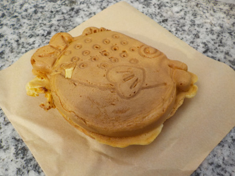
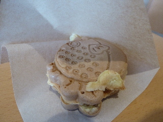
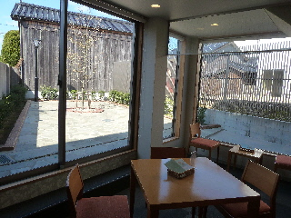
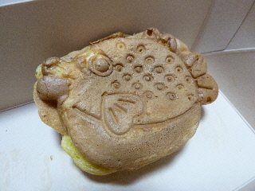

出雲大社のベンチでおふく焼きを食べました。
2020/01/26

天気が良く暖かかったので、出雲大社のベンチでおふく焼きを食べました。
店内で食べてもいいですが、消費税を10%払っていないので税金をごまかしてるみたいになるので外で食べました。
ちょっとした食べ物が買いにくくなりましたね。
食べながら歩いてもいいですが、椅子に座ってゆっくり食べた方が美味しい気がします。
島根県出雲市大社町杵築南837-2
2020/01/26

天気が良く暖かかったので、出雲大社のベンチでおふく焼きを食べました。
店内で食べてもいいですが、消費税を10%払っていないので税金をごまかしてるみたいになるので外で食べました。
ちょっとした食べ物が買いにくくなりましたね。
食べながら歩いてもいいですが、椅子に座ってゆっくり食べた方が美味しい気がします。
2015/03/08
歴博の帰りに福乃和に寄りました。

おふく焼きを買って食べました。
食べ歩きでもいいかなとも思ったんですが、お店の地下に食事スペースがあったので、そこで食べました。

のんびりくつろげて良かったです。
2013/05/11
神門通りにあるお店「福乃和」さんのおふく焼きです。

ふぐの形のたい焼きのような、大判焼きのような商品です。
ふぐなので、福だったり、
胸ヒレがハートマークだったりで、色々縁起が良さそうです。
食べ歩きでも、お土産にもいいですね。
今回はお土産でもらったんですが、今度大社さんに行ったら、出来立てを買って食べたいって思いました。
福乃和さんのホームページはこちら
http://fukunowa.jp/
和田珍味さんのお店です。
フグのミリン干しも試食しよう。